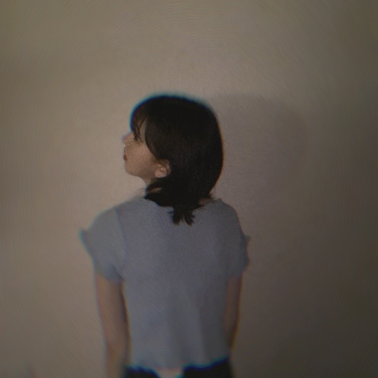

2020/0727Mon夏のせいらしい
"夏のせい"
聞かなきゃ
MVもたのしみ
おはようございます
最近はおNEWのゲームにハマってます
わたしはピットが使いやすいです
あとはお味噌汁も相変わらずブームだし
昨日たべた明太子チーズをフランスパンに
つけて食べたのもハマりそう...
あ
でも最近食べすぎてるから控えなきゃなんですよ
ヘルシー思考で、頑張ります^ - ^

きゃぴ


淡いみずいろがやはりお気に入りです！
肌馴染みいいです
あとデニムもよく履くかなぁ
かわいいデニムとスニーカーほしいなぁ
最近は歌番組の収録がいろいろあって
楽しいです^ - ^
空き時間にメンバーと話すのが
やっぱり好きだなぁ
真夏さん面白かった、昨日。笑


セルフ撮影
フラッシュたいて
タイマーで撮ってます^ - ^
フィルムカメラ極めたい〜
誰か教えてください〜
最近髪色が抜けてパープルピンクみが
少しでてきてわくわくしています
自分らしさはなにかなと考えたとき
ブレない軸と
深い探究心と
宇宙感と
うーん
でも自分の意見を持ってるところ
といいますか周りや流行に流されないところは
割と、自分でもすきです
みんなが好きだから、
みたいな流れにのまれてそれを良しと言う人間になるのではなく自分の目でみて、感じて良いと思ったものを
好きだと、良いと言える人でありたいです
今日は晴れたね〜^ - ^
ではは
2020/07/27 10:24
コメント(218)
ブログ更新早すぎありがとうございます
堀さんほんと水色系の可愛い服もむちゃくちゃ似合ってます
サングラスでクール感上がってる画像もかっこいい
パープルピンクでできましたか〜
僕髪色派手な人結構好きなんですよ
センスがいいことに憧れてるのと
自分のやりたいことを周りの目を気にせず行えるところに尊敬してます
ブログの"自分の意見を持っているところ"の内容、感動してます
自分の良いと思ってるものを隠して、周りに合わせてるなんてそれはもはや自分じゃなくて他人ですからね
堀さんは今まで通り自分を大事にして貫いてください
僕はそんな堀さんに惹かれています
今回はおもしろくんではなく、ほとんどまじめくんでしたが
たまにはそんなときも
ブログ更新早すぎてたまに心配なりますがいつもありがとうございます
更新も楽しみにしています
堀さんほんと水色系の可愛い服もむちゃくちゃ似合ってます
サングラスでクール感上がってる画像もかっこいい
パープルピンクでできましたか〜
僕髪色派手な人結構好きなんですよ
センスがいいことに憧れてるのと
自分のやりたいことを周りの目を気にせず行えるところに尊敬してます
ブログの"自分の意見を持っているところ"の内容、感動してます
自分の良いと思ってるものを隠して、周りに合わせてるなんてそれはもはや自分じゃなくて他人ですからね
堀さんは今まで通り自分を大事にして貫いてください
僕はそんな堀さんに惹かれています
今回はおもしろくんではなく、ほとんどまじめくんでしたが
たまにはそんなときも
ブログ更新早すぎてたまに心配なりますがいつもありがとうございます
更新も楽しみにしています
堀ちゃん！ブログ更新ありがとう！
毎回ブログ読むのが楽しみです。
mステの堀ちゃん最高でした！
これからも応援してます！！
毎回ブログ読むのが楽しみです。
mステの堀ちゃん最高でした！
これからも応援してます！！
未央奈さん、ブログ更新ありがとう。どこにでもいるおっさんです。
ぶれない軸。
かっこよくて羨ましいです。
自分は、周りに合わせる弱々人間なので。
強く、なりたい。
ではは
ひでき
ぶれない軸。
かっこよくて羨ましいです。
自分は、周りに合わせる弱々人間なので。
強く、なりたい。
ではは
ひでき
ヤッホー未央奈ブログ更新ありがとー❗乃木中未央奈のコーナー面白くて良かったよ❗まだまだメンバーだけが知っている、面白い未央奈ジャンジャン出してほしいです、プティ君ものっけてください❗でわでわ本当に体に気配りして健康でいてください❗
午前中からブログ更新ありがとう。
モバメ見たよ、夏のせい、聴いてみます。
めんたいチーズフランスおいしいよね。
乃木中見たよ、来週はさんとゲーム対決！
何のゲームで対戦したの？楽しみです。
宇宙感、深いね
でもなんかわかるような気がします。
今日のショットも可愛いです、
上は水色、下はデニム、そういうの好きです
フィルムカメラ渋いね
でも難しいよ〜、失敗できないからね、デジカメみたいに削除とかできないしブレとかもね。
では〜
モバメ見たよ、夏のせい、聴いてみます。
めんたいチーズフランスおいしいよね。
乃木中見たよ、来週はさんとゲーム対決！
何のゲームで対戦したの？楽しみです。
宇宙感、深いね
でもなんかわかるような気がします。
今日のショットも可愛いです、
上は水色、下はデニム、そういうの好きです
フィルムカメラ渋いね
でも難しいよ〜、失敗できないからね、デジカメみたいに削除とかできないしブレとかもね。
では〜
何度目かのおはようです。
いや、もう こにゃにゃちわ かな？
夏のせい、調べたら限定配信じゃん。
lineの方でもお願いしたいな〜
ゲームの所はあれだけで分かる人には
分かるんでしょうね。僕にはサッパリ…
すべての事にコメントしたいけど短編小説
になると思うからあとひとつだけ。
自分らしさについて。
そっくりそのまま僕も好きです。
と言いたい所ですが宇宙感とは？
昨日のやつ観ても正直よく分からなかった。
未央奈ちゃんの雰囲気という事かな。
今は素敵だけど可愛い女性という印象だけど
不思議な思わず目で追ってしまうような
雰囲気があったからそういう事になるんだろうか
僕の場合は過去の映像を観てこんな一面も
あったの？という感じなのであまりピンと
こないのかもしれないなぁ。
まぁ、魅力的なのは間違いないので僕には
大した問題ではないですね。
でははは。
いや、もう こにゃにゃちわ かな？
夏のせい、調べたら限定配信じゃん。
lineの方でもお願いしたいな〜
ゲームの所はあれだけで分かる人には
分かるんでしょうね。僕にはサッパリ…
すべての事にコメントしたいけど短編小説
になると思うからあとひとつだけ。
自分らしさについて。
そっくりそのまま僕も好きです。
と言いたい所ですが宇宙感とは？
昨日のやつ観ても正直よく分からなかった。
未央奈ちゃんの雰囲気という事かな。
今は素敵だけど可愛い女性という印象だけど
不思議な思わず目で追ってしまうような
雰囲気があったからそういう事になるんだろうか
僕の場合は過去の映像を観てこんな一面も
あったの？という感じなのであまりピンと
こないのかもしれないなぁ。
まぁ、魅力的なのは間違いないので僕には
大した問題ではないですね。
でははは。
昨日初めて「耳をすませば」みたよ！すごく感動した、、！
そして月島雫の声がみおなちゃんの声に似ててびっくりした笑笑
そして月島雫の声がみおなちゃんの声に似ててびっくりした笑笑
こういうレトロチックな写真すごい好きです！
自分はCONTAXのT2っていうフィルムカメラを使ってて(ほんとはT3が欲しいのですが、、)、結構使いこなすのには難しいんですけど撮ってて楽しいです！
フィルムも種類ごとに写りが全然違うので、調べて好みのフィルムを探すのも面白いんじゃないかなと思います！
色々試して好きなように撮るのが1番いいかなと！
自分はCONTAXのT2っていうフィルムカメラを使ってて(ほんとはT3が欲しいのですが、、)、結構使いこなすのには難しいんですけど撮ってて楽しいです！
フィルムも種類ごとに写りが全然違うので、調べて好みのフィルムを探すのも面白いんじゃないかなと思います！
色々試して好きなように撮るのが1番いいかなと！
ブログ更新ありがとう！
最近になって乃木恋始めて、ハマりました！
明太子チーズをつけたパン美味しそう！
俺も流行りに乗っかるより、自分で手にしたり、見たり、聞いたりして自分が良いと思ったものを好きだ！って言うタイプだから、これは変えたくないと思ってるよ！
オシャレな写真ありがとう！
最近になって乃木恋始めて、ハマりました！
明太子チーズをつけたパン美味しそう！
俺も流行りに乗っかるより、自分で手にしたり、見たり、聞いたりして自分が良いと思ったものを好きだ！って言うタイプだから、これは変えたくないと思ってるよ！
オシャレな写真ありがとう！
未央奈ちゃんブログありがとう！！
写真めちゃめちゃかっこいい！！
未央奈ちゃん本当にサングラスが似合うね！！
うらやましいです！！
それではまた！！
写真めちゃめちゃかっこいい！！
未央奈ちゃん本当にサングラスが似合うね！！
うらやましいです！！
それではまた！！
俺も流行ってる
ものには全然､興味ない
から流行りにしかのれない奴は
マジ卍だし鬼ぴえんかました上に
おは丸水産よいちょまるって感じっ♪
ﾒﾁｬﾒﾁｬﾉｯﾄﾙｶﾞﾅｯ(oﾟ∀ﾟ)=○ )´3｀)∴
)´3｀)∴
ものには全然､興味ない
から流行りにしかのれない奴は
マジ卍だし鬼ぴえんかました上に
おは丸水産よいちょまるって感じっ♪
ﾒﾁｬﾒﾁｬﾉｯﾄﾙｶﾞﾅｯ(oﾟ∀ﾟ)=○
こんにちは。
みおなちゃんは、こんな状況でも色々と
忙しそうですね。
興味を持てるのは元気な証拠。
写真、面白いね。８ｍｍフィルムの１コ
マみたい。
まだ完全じゃないけど、メンバーでの仕
事が増えて何よりです。
乃木坂の魅力は、集まってお互い知り合
って、見つけあって生まれるエピソード
の宝庫だからね。
それに仕事云々より、以前まであんなに
仲良くやってったのに、急に会えなくな
る事の方が、気持ち的に心配だったけど、
また元に戻れる道筋が見えてきたから、
本当によかった。
なんて、地面の人間が思いました。
みおなちゃんは、こんな状況でも色々と
忙しそうですね。
興味を持てるのは元気な証拠。
写真、面白いね。８ｍｍフィルムの１コ
マみたい。
まだ完全じゃないけど、メンバーでの仕
事が増えて何よりです。
乃木坂の魅力は、集まってお互い知り合
って、見つけあって生まれるエピソード
の宝庫だからね。
それに仕事云々より、以前まであんなに
仲良くやってったのに、急に会えなくな
る事の方が、気持ち的に心配だったけど、
また元に戻れる道筋が見えてきたから、
本当によかった。
なんて、地面の人間が思いました。
ブログ更新ありがとう
宇宙感って乃木坂工事中のやつやん！タイムリーやなー
おはよう！
晴れたねー♪
せっかく晴れたけど久しぶりの休みなので
家でのんびりしちゃってます笑
今日の写真もかわいい！
コーデも画質もレトロ感あって雰囲気出てる
ポーズや小道具もこだわってるね！
とくに5枚目の、雑誌に載ってそう感◎
4、5枚目で後ろの裾からなにかはみ出させてるのもワンポイントでかわいいな～
自分の中ではみおならしさはあと
行動力とか発信力だと思ってるよ
自身の考えや探究したことを
自分だけのものにしないで
周りに発信して影響を与えていく力
誰かを助けたり救える力
ブログに写真、モバメに755、
いつもたくさんありがとう(^-^)
晴れたねー♪
せっかく晴れたけど久しぶりの休みなので
家でのんびりしちゃってます笑
今日の写真もかわいい！
コーデも画質もレトロ感あって雰囲気出てる
ポーズや小道具もこだわってるね！
とくに5枚目の、雑誌に載ってそう感◎
4、5枚目で後ろの裾からなにかはみ出させてるのもワンポイントでかわいいな～
自分の中ではみおならしさはあと
行動力とか発信力だと思ってるよ
自身の考えや探究したことを
自分だけのものにしないで
周りに発信して影響を与えていく力
誰かを助けたり救える力
ブログに写真、モバメに755、
いつもたくさんありがとう(^-^)
俺のせいらしい
すちやよ♥️
未央奈さん、今日も可愛く美しい！
写真キレイです。もっとベーしてください。サングラスの表情もなんとも言えんです。
僕もぶれない心で未央奈の宇宙に浸ります。
未央奈がでている歌番組、もちろん全部見てます。今年の夏も未央奈と乃木坂で乗り切ります。
写真キレイです。もっとベーしてください。サングラスの表情もなんとも言えんです。
僕もぶれない心で未央奈の宇宙に浸ります。
未央奈がでている歌番組、もちろん全部見てます。今年の夏も未央奈と乃木坂で乗り切ります。
大すこ
もしかしてRAD？！
ほりちゃんwimper？
堀ちゃん
お勧めのフィルムカメラ LOMO instantいいよ！
直感的に操作できるし、何よりアイテムとして可愛いよ
いろんなカラーリングあるし、選ぶのも楽しい！
撮影のとき露出とかシャッタースピードとかいじるの結構大変だったりするから、そういう人にはオートで設定してくれるLOMO instant automatもある！
お勧めのフィルムカメラ LOMO instantいいよ！
直感的に操作できるし、何よりアイテムとして可愛いよ
いろんなカラーリングあるし、選ぶのも楽しい！
撮影のとき露出とかシャッタースピードとかいじるの結構大変だったりするから、そういう人にはオートで設定してくれるLOMO instant automatもある！
宇宙感
昨日の乃木中おもしろかった！
来週はスタジオでるんだね！
たのしみだー✨✨
昨日の乃木中おもしろかった！
来週はスタジオでるんだね！
たのしみだー✨✨
ブログ更新ありがとう！
おNEWのゲームはスマブラかな？？
乃木中面白かった笑
歌番組でどんどん楽しみたいなぁ～
おNEWのゲームはスマブラかな？？
乃木中面白かった笑
歌番組でどんどん楽しみたいなぁ～
堀ちゃん、ブログ更新ありがとう！
堀ちゃんはピットを使ってるんですね！僕もそのゲーム、大好きです！
改めてですが、さすが堀ちゃんはどんな髪型も服装も似合いますね！
中々、直接堀ちゃんに会いに行くことができないので、歌番組への出演凄く楽しみです！でも、早く会いたいよ〜
あと、昨日の「乃木中」は未央奈節炸裂で可愛かったです！
み〜おな、大好き！
堀ちゃんはピットを使ってるんですね！僕もそのゲーム、大好きです！
改めてですが、さすが堀ちゃんはどんな髪型も服装も似合いますね！
中々、直接堀ちゃんに会いに行くことができないので、歌番組への出演凄く楽しみです！でも、早く会いたいよ〜
あと、昨日の「乃木中」は未央奈節炸裂で可愛かったです！
み〜おな、大好き！
今回のブログの文章も素晴らしかったです。歌番組で、見る、堀さんは、どこの位置にいても、キラキラ光ってますね、堀さんは、きっと夢を叶える人だと思っています。堀さんの中には、宝の山が入ってます。宝を掘り出せば、いいだけです。堀さんは、もっと、自分を、ほめてあげてくださいね、堀さんは、人に夢と希望を与える光るアイドルです。
堀ちゃん最高です、これからも頑張ってください！
沢山の事にハマり中の
堀未央奈さんブログ
更新ありがとう⁉︎(^^)
未央奈ちゃんに近づける様に
全てチェックするね⁉︎
まずは夏のせいチェックするね
淡い水色美人さん〜〜
堀未央奈さんブログ
更新ありがとう⁉︎(^^)
未央奈ちゃんに近づける様に
全てチェックするね⁉︎
まずは夏のせいチェックするね
淡い水色美人さん〜〜
こんちゃ！みおな♪(*´ω｀*)暑いね これで梅雨明けだろう‼️然し、暑い‼️(´Д｀)身体が馴染まないよ(T△T)
ブログ更新ありがとう
堀ちゃんの自分を持ってる考え方素敵だと思います
最近は歌番組多くて嬉しく思います
体調に気を付けて頑張ってね
堀ちゃんの自分を持ってる考え方素敵だと思います
最近は歌番組多くて嬉しく思います
体調に気を付けて頑張ってね
未央奈ちゃん♡
更新ありがとうございました^^*
歌番組出られるんですね！
楽しみです~❕❕
質問いいですか？
最近話したメンバーは誰ですか？？
最近嬉しかった事は？
答えてくらたら嬉しいです！
ではまた！
未央奈ちゃん大好きです♡
更新ありがとうございました^^*
歌番組出られるんですね！
楽しみです~❕❕
質問いいですか？
最近話したメンバーは誰ですか？？
最近嬉しかった事は？
答えてくらたら嬉しいです！
ではまた！
未央奈ちゃん大好きです♡
ブログ更新ありがとう！
写真集のドレスもそうやったけど水色似合ってるね〜
自分の意志を持つのは大切だと思うし、そういう堀ちゃんが好きです(^^)
写真集のドレスもそうやったけど水色似合ってるね〜
自分の意志を持つのは大切だと思うし、そういう堀ちゃんが好きです(^^)
新曲の衣装、可愛いよね❗
未央奈ちゃんが着てる形、気に入ってますか⁉️
もうすぐ梅雨明けだから、夏バテしないようにしっかり食べよう❗
大好きです❤️
未央奈ちゃんが着てる形、気に入ってますか⁉️
もうすぐ梅雨明けだから、夏バテしないようにしっかり食べよう❗
大好きです❤️
フィルムカメラどんなの使ってるのかな。
ハーフサイズなら72枚取れるからお得よ。
極めるならスポットメーター(露出計)買うといいよ。
プロが撮影の時に使うのと違う、のぞいて使うやつ。
それで露出やしぼり決めて。
絞りを変えればピントのあい具合変わるし。
写真の雰囲気も変わる。
露出はもちろん明暗つけられる。
レンズにフィルターつけられるなら色々効果つけるのあるし。
でももう普通の店じゃ売ってないかな。。
色々アクセサリーを調べてみると面白いよきっと。
ハーフサイズなら72枚取れるからお得よ。
極めるならスポットメーター(露出計)買うといいよ。
プロが撮影の時に使うのと違う、のぞいて使うやつ。
それで露出やしぼり決めて。
絞りを変えればピントのあい具合変わるし。
写真の雰囲気も変わる。
露出はもちろん明暗つけられる。
レンズにフィルターつけられるなら色々効果つけるのあるし。
でももう普通の店じゃ売ってないかな。。
色々アクセサリーを調べてみると面白いよきっと。
ブログありがとう！！夏のせい聴いてみるね！！！！新しいゲームってどんなのだろう笑笑 私はずっとあつ森やってるー！お味噌汁なに味噌が好きー？？？愛知はねー八丁味噌美味しいよ！！
淡い水色ほんと似合うよね！！水色のドレスも似合ってたし、パネル展のも綺麗だった♡ 未央奈ちゃんの自分にブレがなくて、常に自分を持ってるところが好きだし、憧れです！早く会っていっぱい想い伝えたいなぁ！！スペイベ延期になっちゃったけど、私にとって未央奈ちゃんとのいつかの待ち合わせ場所ができたから、それまでずっと待ってるね！あと、昨日755引用きたの嬉しすぎたぁああ！！世にも奇妙な物語の世界観絶対未央奈ちゃんに合ってるし、怖がらせる役とか感情的になってる演技見てみたいもん！！オファーしたいぐらい！！音楽番組とかでも未央奈ちゃんが出る番組は全部チェックして、帰ったあと見るのが幸せで、心休まる時間笑笑 帰ったら乃木中みるね！！
ももんが
淡い水色ほんと似合うよね！！水色のドレスも似合ってたし、パネル展のも綺麗だった♡ 未央奈ちゃんの自分にブレがなくて、常に自分を持ってるところが好きだし、憧れです！早く会っていっぱい想い伝えたいなぁ！！スペイベ延期になっちゃったけど、私にとって未央奈ちゃんとのいつかの待ち合わせ場所ができたから、それまでずっと待ってるね！あと、昨日755引用きたの嬉しすぎたぁああ！！世にも奇妙な物語の世界観絶対未央奈ちゃんに合ってるし、怖がらせる役とか感情的になってる演技見てみたいもん！！オファーしたいぐらい！！音楽番組とかでも未央奈ちゃんが出る番組は全部チェックして、帰ったあと見るのが幸せで、心休まる時間笑笑 帰ったら乃木中みるね！！
ももんが
堀ちゃんブログ更新ありがとう！
夏のせいモバメでも来てたけどきいてみるね
蓮加ちゃんがフィルムカメラにハマってるみたいだよ！
昨日の乃木中みり愛ちゃんにものまねされてたね！
みうちうけやっぱり面白いね！
ではは
夏のせいモバメでも来てたけどきいてみるね
蓮加ちゃんがフィルムカメラにハマってるみたいだよ！
昨日の乃木中みり愛ちゃんにものまねされてたね！
みうちうけやっぱり面白いね！
ではは
未央奈さんブログ更新ありがとうございます！
歌番組でもっともっと乃木坂さんみたいです❗
乃木坂工事中もいつも楽しみにしてます。
学校の勉強や乃木坂関連のものをみているとあっという間に一日が終わってしまいます。(笑)
歌番組でもっともっと乃木坂さんみたいです❗
乃木坂工事中もいつも楽しみにしてます。
学校の勉強や乃木坂関連のものをみているとあっという間に一日が終わってしまいます。(笑)
おつかれん
スタジオですか？ってくらい、映え写真！！さすがみおな様
メンバーとどんな話してるか聞きたいです！
メンバーとどんな話してるか聞きたいです！
未央奈ちゃんこんにちは‼ありがとうございます！楽しみにしてます‼頑張ります‼お疲れ様です。気をつけて下さい！頑張ります‼
未央奈らしさとは
強く儚い大人の女性のイメージがあるよ。厳しさと優しさ両方持ち合わせてる感じ 泣き虫な印象もあるけどそれでも強くなろうと努力してきた印象があってそういうところも好きだなって あーでも異次元なイメージも強い(笑)良い意味だから気にしないで ではw
強く儚い大人の女性のイメージがあるよ。厳しさと優しさ両方持ち合わせてる感じ 泣き虫な印象もあるけどそれでも強くなろうと努力してきた印象があってそういうところも好きだなって あーでも異次元なイメージも強い(笑)良い意味だから気にしないで ではw
未央奈ブログ更新ありがとう(^^)
僕もデニム大好きです！週に3.4回履いてます！
先日の歌番組お疲れ様でした！
神宮での披露。Mステでの披露。どちらともとっても良くて
やっぱ乃木坂ちゃん見ると釘付けになってしまいます(^^)
特に未央奈が1番可愛かったよ！(//∇//)
これからもTVで乃木坂見れるの楽しみにしてます！
体調には気をつけてね！応援してます٩( 'ω' )و
次のブログも楽しみに待ってるね！
僕もデニム大好きです！週に3.4回履いてます！
先日の歌番組お疲れ様でした！
神宮での披露。Mステでの披露。どちらともとっても良くて
やっぱ乃木坂ちゃん見ると釘付けになってしまいます(^^)
特に未央奈が1番可愛かったよ！(//∇//)
これからもTVで乃木坂見れるの楽しみにしてます！
体調には気をつけてね！応援してます٩( 'ω' )و
次のブログも楽しみに待ってるね！
未央奈ちゃん♪おはよう♪ブログの更新ありがとうね♪凄く嬉しいよ！自分は最近ずっとポケモンのゲーム遊んでるよ♪あと、自分は豚汁毎日飲んでるよ！お洋服凄く可愛いね！凄く似合ってるよ♪ブログの写真凄く可愛い～♪セルフ撮影良いよね！
最近歌番組で大好きな乃木坂が観れて凄く嬉しいよ！大好きな未央奈ちゃんが沢山観れて嬉しいよ！
自分の自分らしさは、自分の意思を持ってる所は、周りや流行に流されない所が未央奈ちゃんと一緒で好きな所かな。自分は自分って感じでいるよ。
自分の目で見て感じて良いって思ったものを好きって言えるのは大事だよね♪
今日は晴れたね♪また、ブログの更新楽しみにしてるね♪未央奈ちゃん大好きだよ♪では！
堀 未央奈神推し秀喜より！(≧∇≦)
最近歌番組で大好きな乃木坂が観れて凄く嬉しいよ！大好きな未央奈ちゃんが沢山観れて嬉しいよ！
自分の自分らしさは、自分の意思を持ってる所は、周りや流行に流されない所が未央奈ちゃんと一緒で好きな所かな。自分は自分って感じでいるよ。
自分の目で見て感じて良いって思ったものを好きって言えるのは大事だよね♪
今日は晴れたね♪また、ブログの更新楽しみにしてるね♪未央奈ちゃん大好きだよ♪では！
堀 未央奈神推し秀喜より！(≧∇≦)
未央奈ちゃんブログ更新ありがとう！！
どうしたらそんなにエモい写真が撮れるんですか〜？？
フィルム全然使えなすぎて泣けてきます笑笑
私の地元は今日雨です。
さぁ今週でバイトも最後で、テスト週間になるので未央奈ちゃんが過去にインスタであげてくれた写真や自分の保ち方を見ながら勉強頑張ろうと思います！！！
この文章届いてるといいなあ…笑笑
最後の2文を常につけて送ってた人です笑笑
未央奈ちゃんが大好きです！
いつもありがとう未央奈ちゃん
どうしたらそんなにエモい写真が撮れるんですか〜？？
フィルム全然使えなすぎて泣けてきます笑笑
私の地元は今日雨です。
さぁ今週でバイトも最後で、テスト週間になるので未央奈ちゃんが過去にインスタであげてくれた写真や自分の保ち方を見ながら勉強頑張ろうと思います！！！
この文章届いてるといいなあ…笑笑
最後の2文を常につけて送ってた人です笑笑
未央奈ちゃんが大好きです！
いつもありがとう未央奈ちゃん
乃木坂工事中では久々の登場だったので嬉しかったよ
歌番組でこれから見られるのも嬉しい
ホットギミックのBlu-ray、DVDの発売日決まったんですね
ずっと待っていました
予約しなきゃだ
歌番組でこれから見られるのも嬉しい
ホットギミックのBlu-ray、DVDの発売日決まったんですね
ずっと待っていました
予約しなきゃだ
未央奈の自分に芯があるところ魅力的だと思います
宇宙顔とか、地面にいそうな顔とか、正直意味がわからなかったけど、未央奈の中にそのイメージがあるんだろうからそれを他の言葉に変えずそのまま表現しているのはぶれない意志を感じましたね。
宇宙顔とか、地面にいそうな顔とか、正直意味がわからなかったけど、未央奈の中にそのイメージがあるんだろうからそれを他の言葉に変えずそのまま表現しているのはぶれない意志を感じましたね。
色々な表情やセクシー的なポーズだったりで可愛いくて面白い(*ﾟ∀ﾟ*)
nnkgzzwkがあなたの投稿に「いいね」しました。
明日は曇りっす
明日は曇りっす
ブログ更新ありがとう！！
ぜひその真夏さんとの素敵なエピソード聞きたい、気になる！！
未央奈は細すぎるからあんまり痩せて体調崩さないでね夏は体調崩しやすいから気をつけてね( ´ ▽ ` )
痩せる痩せるって頑張るより、筋トレして適度な筋肉つけた方が、体のラインが綺麗に見えるよ！！あんまり参考にならんかもだけど私は成功しました！！
歌番組全部ちゃんと見てるよ！route246の未央奈のキレキレダンス最高だからね！！ほんとにエースだよ！！
次の更新も楽しみにしてるね！！
ぜひその真夏さんとの素敵なエピソード聞きたい、気になる！！
未央奈は細すぎるからあんまり痩せて体調崩さないでね夏は体調崩しやすいから気をつけてね( ´ ▽ ` )
痩せる痩せるって頑張るより、筋トレして適度な筋肉つけた方が、体のラインが綺麗に見えるよ！！あんまり参考にならんかもだけど私は成功しました！！
歌番組全部ちゃんと見てるよ！route246の未央奈のキレキレダンス最高だからね！！ほんとにエースだよ！！
次の更新も楽しみにしてるね！！


写真がいつも可愛いですね
～自分の目で好きになった～ そっか、これは良い考え方かもね
俺は俺の目で乃木坂を好き始めた！俺の周りの人がアイドル文化っていうかあまり好きではないのでずっといじられたね特に弟にいじられた 笑 でも乃木坂が俺の自慢の選択です！
それでは、お体には気を付けてくださいね